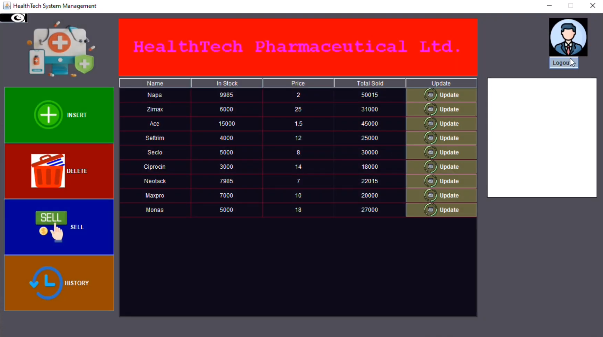
Pharmacy management system, developed with Java, that can handle the create, read, upadate and delete operations of multiple users, employees and admins. It stores data of inventory and retrieve data upon queries faster using object oriented programming principles and shows to the user.
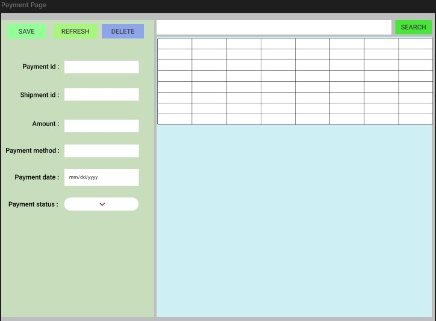
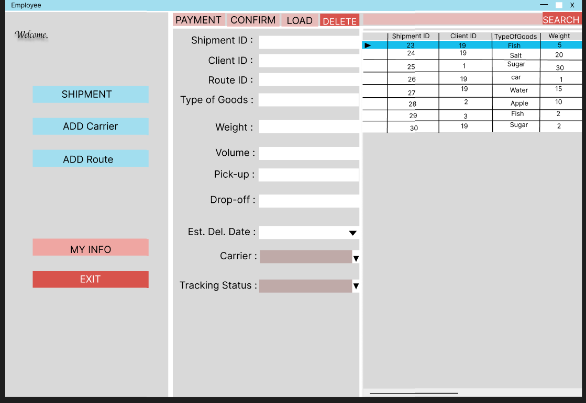
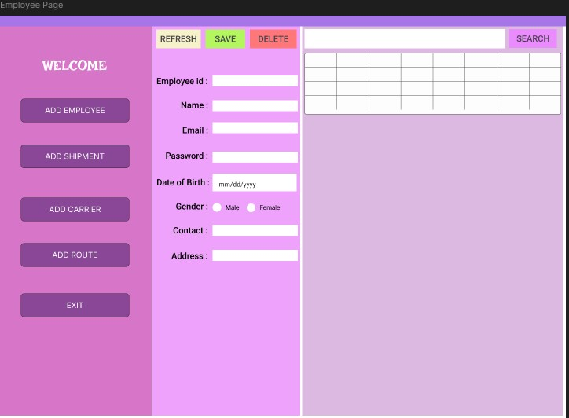
Delivery management system that ensures deliveries are done faster, safer and without damaging products. It stores information for tracking each parcel for deliveries and it builds trust between sellers and customers.
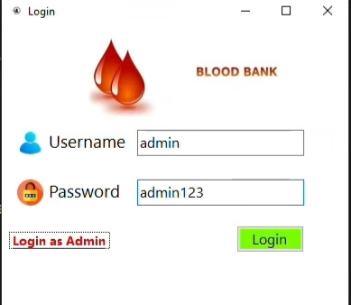
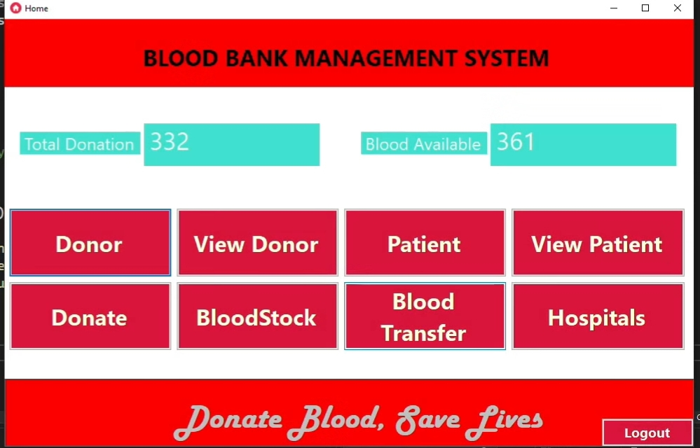
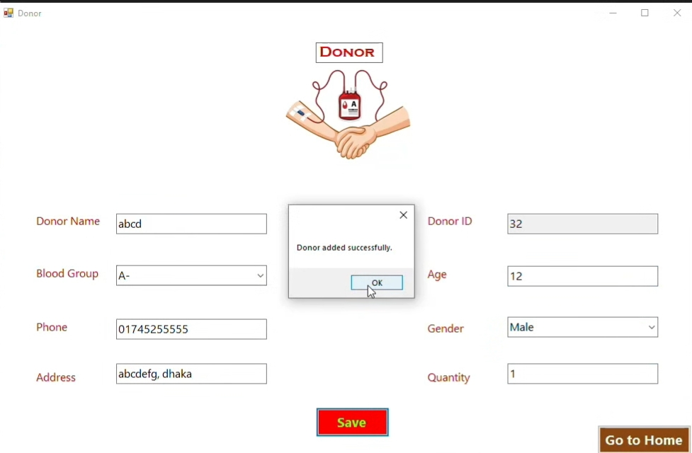
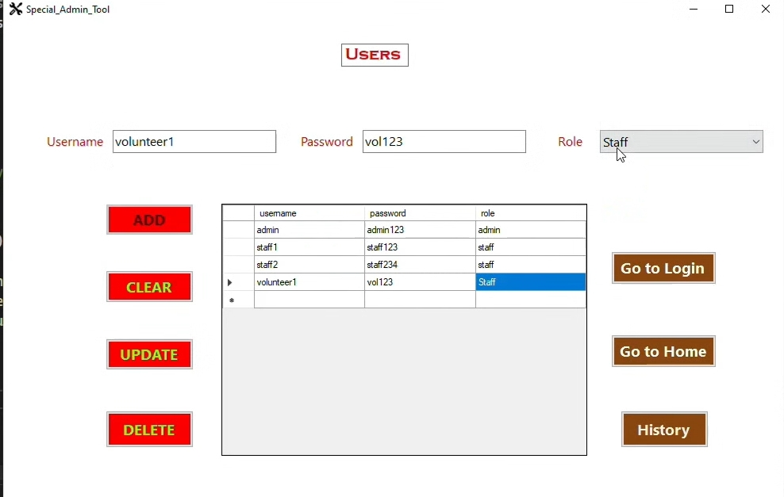
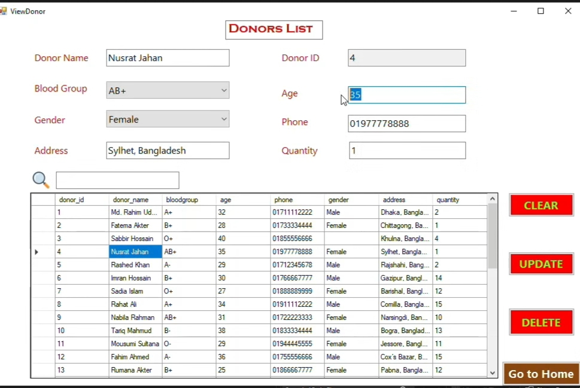
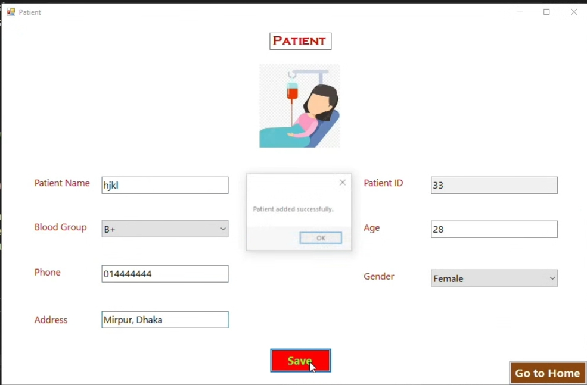
Bloodbank management system ensures that donors' blood is managed properly for the patients who are in need of blood emergency. It stores inventory data of donors' list so donors can be contacted for emergency and it also keep track of patients and hospitals lists.

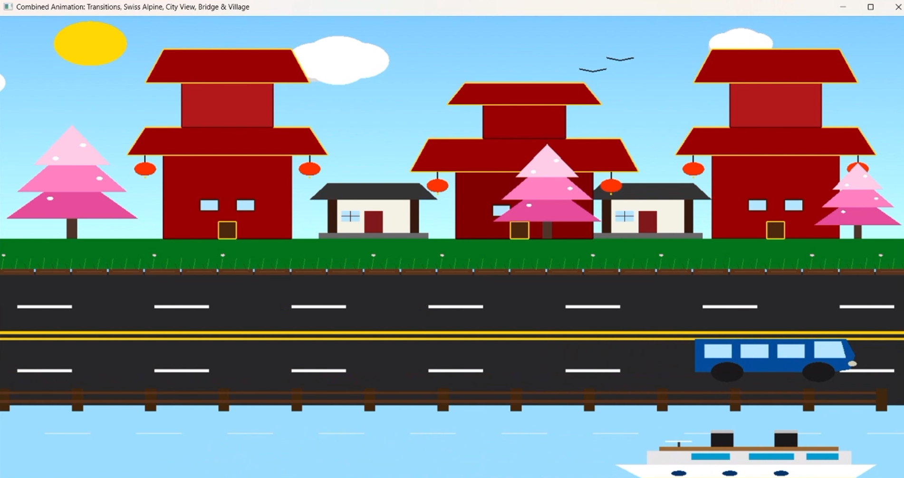
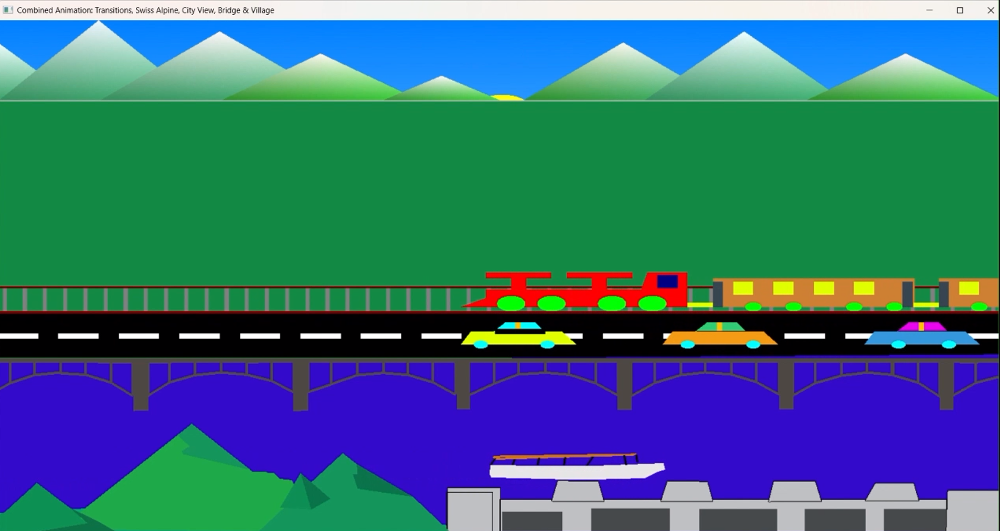
This graphics project visualizes multiple real-world locations using OpenGL. Each scene focuses on realistic drawing techniques, smooth animations, environmental effects, and user interaction.